A reusable data-cleaning-and-modeling toolkit (src/toolkit/), proven against four real, unrelated public datasets — Chilean finance, Chilean copper mining, South American agriculture, and a full 80MB World Bank Excel transformed into a real data warehouse. Every dataset is genuinely real (no synthetic data anywhere); every model trains for at least 100 real epochs; every cleaning technique lives once in the toolkit and gets reused, unchanged, across all four domains.
This page shows the project's results. The methodology, the design decisions and the limitations are documented in the repository's README.
Domain 1 — Financial system (Banco Central de Chile)
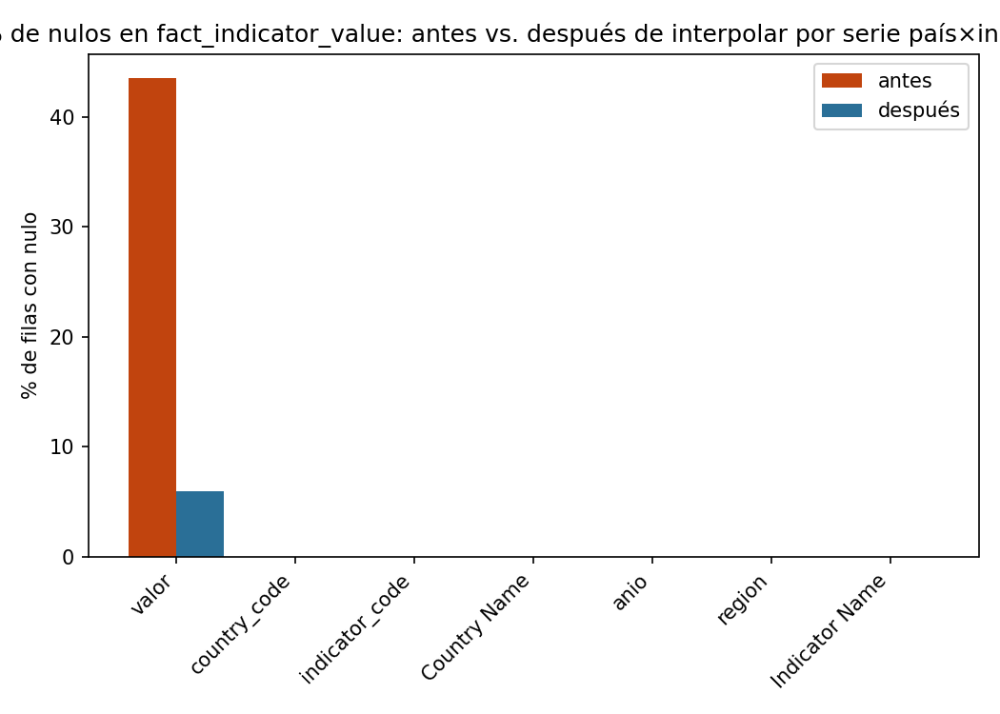
Two bars per series: the orange bar is the % of calendar days with no published value before cleaning, the blue bar is the same metric after reindex_to_full_calendar + forward-fill. Dollar and TPM start at ~32% missing (every weekend and public holiday has no quote, since Chile's FX market only trades on business days) and drop to 0% once those gaps are explicitly created as rows and filled with the last known value. UF barely moves because Chile's inflation-indexed accounting unit is, by law, defined for every single calendar day — it has almost nothing to reindex.
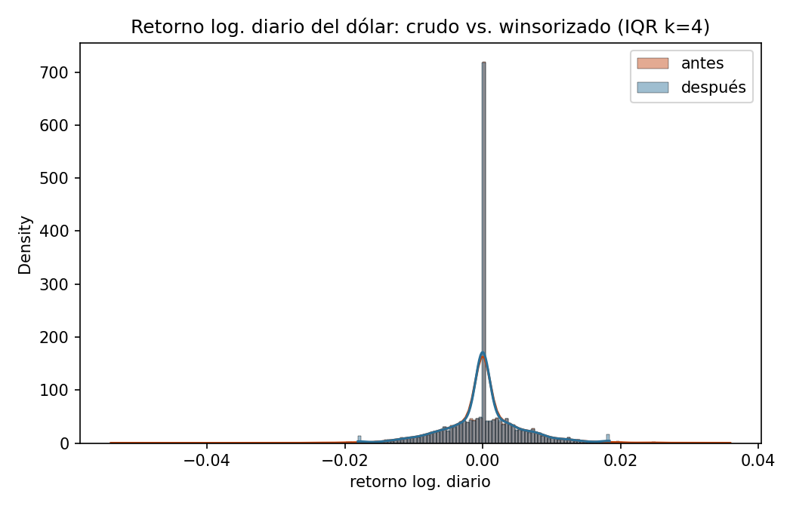
Two overlapping histograms (with a smoothed density curve on top of each) of the daily log-return of the dollar: orange is the raw, untouched distribution; blue is after winsorizing at IQR k=4. The two curves sit almost exactly on top of each other everywhere except the extreme tails, which is the point — winsorization here only clips the handful of statistically implausible days, it does not compress or reshape the bulk of real day-to-day market movement.
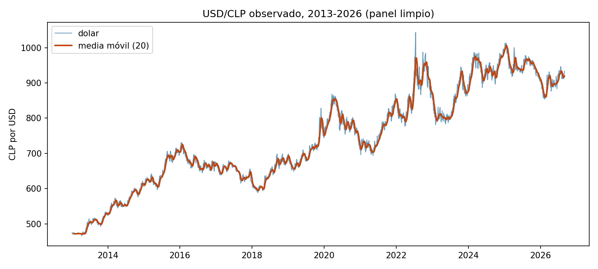
The thin line is the raw daily observed exchange rate for the full 2013–2026 history; the thick line is a 20-day rolling mean laid on top to make the medium-term trend readable through the daily noise. Useful for a gut-check on the whole panel at once: every major real move (the 2015–2016 commodity slump, the 2020 COVID shock, the 2022 peak) should be visible here before trusting any downstream model built on it.
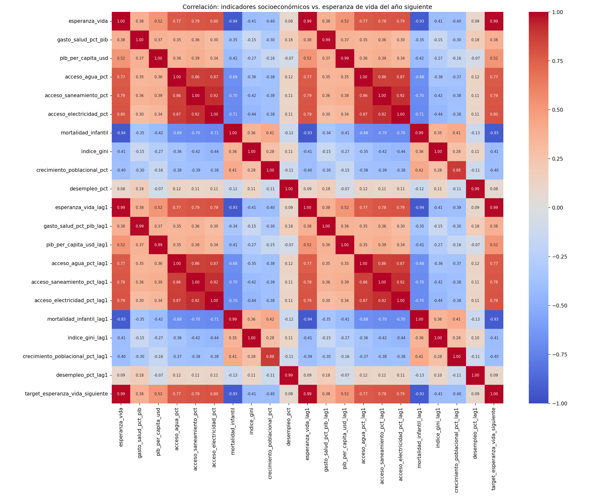
A Pearson correlation matrix (red = positive, blue = negative, white ≈ 0) between every model feature — lagged returns, rolling volatility windows, TPM/IPC/IMACEC — and the actual target column (tomorrow's return), included as its own row/column so its correlation with every feature is visible directly. Every cell touching the target is close to white: no single feature moves together with tomorrow's return in any meaningful linear way, which is exactly what should be expected of an efficient market and previews why every model in the table below lands near R²≈0.
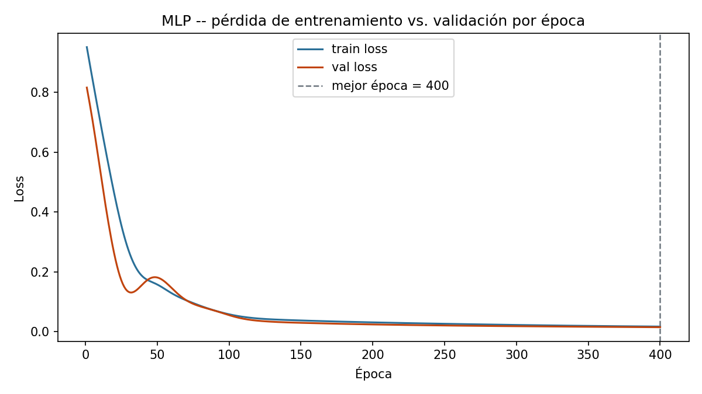
Training loss (blue) and validation loss (orange) plotted against training epoch, with a dashed vertical line marking the epoch whose validation loss was actually kept as the final model (not necessarily the last epoch run — train_with_early_stopping restores the best checkpoint, never just the most recent one). The training floor of ≥100 epochs is directly visible as the x-axis length.
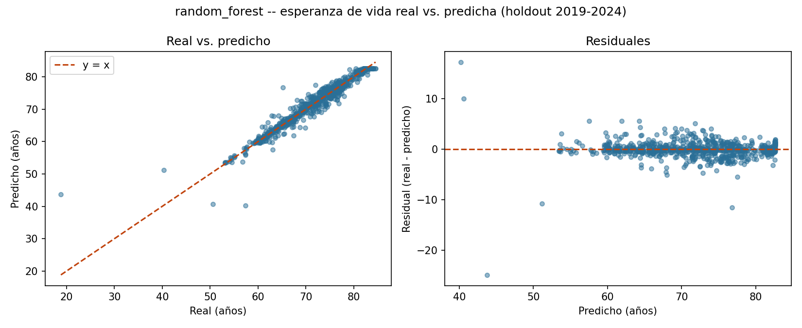
Two panels side by side. Left: every test-set day plotted as (actual return, predicted return), with a dashed diagonal line showing where a perfect model would put every point — the closer the cloud hugs that line, the better the model. Right: the same predictions' residuals (actual − predicted) plotted against the prediction itself, which should look like a flat, structureless band if the model isn't systematically over- or under-predicting in some region. Here both panels show a wide, shapeless scatter with no visible relationship to the diagonal — the honest visual signature of a model with essentially no real predictive power (R²≈0), not a plotting bug.
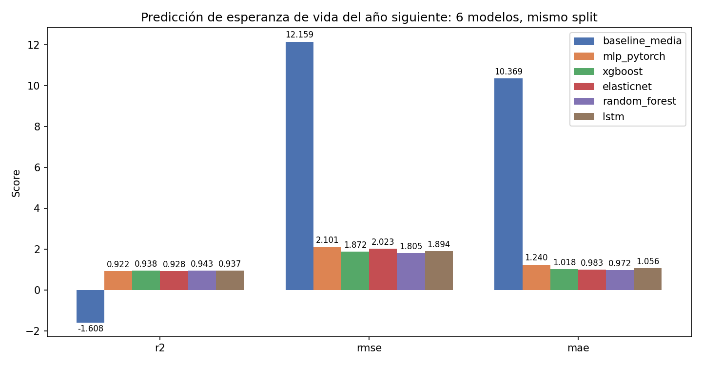
A grouped bar chart with one bar per model (baseline, MLP, XGBoost, ElasticNet, Random Forest, LSTM) across three metrics (R², RMSE, MAE), numeric value labeled on top of each bar. All six bars in every metric group sit at essentially the same height — the visual proof that none of the six approaches meaningfully outperforms a model that just predicts the historical average.
Domain 2 — Mining (COCHILCO)
Same before/after bar-pair layout as the financial domain, but the result here is different and itself informative: both bars sit at (or near) 0% for the 38 real mine columns, because — as the writeup above explains — a mine that isn't producing reports an explicit 0.0, not a blank cell. This chart is the visual confirmation that this domain's cleaning challenge really is structural (wrong rows/columns), not missing values, before any imputation logic gets a chance to (wrongly) treat those zeros as gaps.
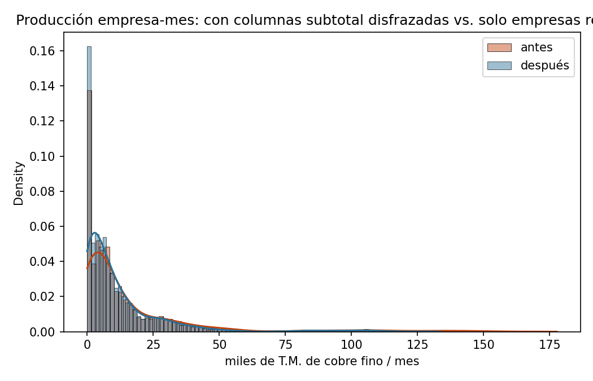
Raw (orange) vs. winsorized (blue) distribution of monthly production values, pooled across all 38 companies but winsorized independently *within* each company's own scale (k=3.0 IQR, non-zero months only) — a company producing hundreds of thousands of tons a month and one producing a few thousand are never compared against the same global cutoff, which would unfairly flag the larger operation's normal variation as "outlier."
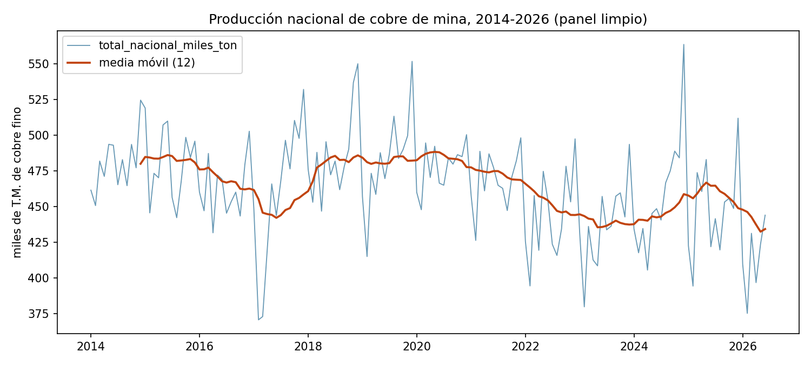
Real total national monthly copper production (the sum of the 38 real mine columns, subtotal columns excluded), 2014 through mid-2026, with a rolling mean overlaid the same way as the financial domain's dollar chart — the right place to eyeball real seasonal dips (Chilean copper output typically softens in the Southern Hemisphere winter) and any longer production trend before trusting the model's seasonal-naive baseline comparison.Correlation heatmap between the lag/rolling features and next month's national production. Unlike the financial domain, expect (and the chart shows) visibly strong correlation between production and its own recent lags — copper mining output is highly autocorrelated month to month, which is exactly the structure the seasonal-naive baseline already exploits, and the bar the five trained models have to clear.Train/validation loss vs. epoch, same reading as the financial domain's curve. This run is a concrete example of min_epochs=100 combined with real early stopping doing its job: the model trained past the 100-epoch floor and then stopped itself at epoch 136 once validation loss stopped improving for the configured patience window, restoring the weights from its best epoch (111), not the final one.Same actual-vs-predicted-plus-residuals layout as the financial domain's diagnostic chart, but for the mining domain's best real model. Here the point cloud visibly hugs the dashed diagonal far more tightly than in the financial chart — the direct visual counterpart of XGBoost's real R²=0.515, a model that is actually explaining a meaningful share of month-to-month variation, not just matching the financial domain's honest near-zero result.Same grouped-bar format as the financial domain, but here the six bars clearly separate instead of tying: XGBoost's bar is visibly taller on R² and shorter on RMSE/MAE than every other model, in every metric — a real, ungrudging win rather than a coin-flip. Random Forest's bar is the one closest to it; the LSTM's is the shortest R² bar of all six, shorter even than the seasonal baseline's.
Domain 3 — Agriculture (World Bank)
One before/after bar pair per indicator. Most indicators barely move (they were already 95%+ complete, the rare gap being a not-yet-reported trailing year). irrigated_land_pct is the visibly different bar in the group — it starts far higher than the rest and does not drop to zero after cleaning, because interpolation can only fill a gap that has real data on at least one side of it within the same country, and Peru's entire irrigation series has none; that residual bar height is Peru's cross-country-mean-imputed cells, kept honestly visible rather than hidden by a chart that only shows the "successful" indicators.Correlation heatmap between the socioeconomic/agronomic features and next year's cereal yield. Unlike the financial domain's mostly-white row, expect real color here — fertilizer use and the yield's own lags should show visibly strong positive correlation with the target, the direct visual preview of why every trained model lands well above R²=0.79 in the results table.
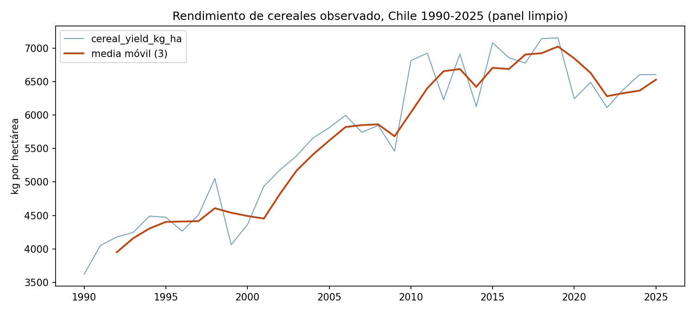
Chile's real annual cereal yield (kg/hectare), 1990–2025 — a single country's series pulled out of the 9-country panel to make the real long-run upward trend legible on its own, the same trend that makes the naive per-country-mean baseline a systematically weak predictor for the most recent test years.
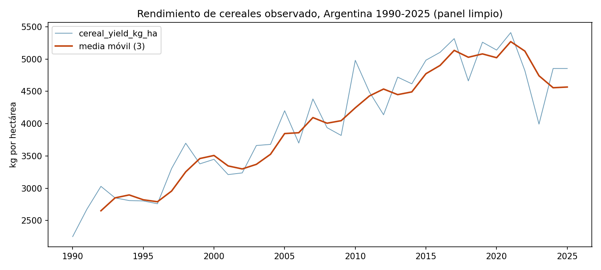
The same real series for Argentina, shown alongside Chile's specifically so the two can be compared directly — a useful sanity check that the panel's country-to-country scale differences (visible here) are genuine agronomic differences, not a units or parsing inconsistency between countries.Train/validation loss vs. epoch. This run illustrates the min_epochs=100 floor working as intended on a domain with real signal: the model needed the full runway past epoch 100 to keep improving, early-stopping only once it plateaued at epoch 330, with its best real checkpoint saved from epoch 305.Actual-vs-predicted scatter plus residuals, same layout as the other three domains, for this domain's best model — Random Forest, selected by real test R² rather than fixed in advance, which is why this chart changed model when the three new families were added. The point cloud sits visibly close to the dashed diagonal across nearly the full yield range — the visual counterpart of a real R²≈0.90, not a cherry-picked good-looking subset.Grouped bars per model per metric. The baseline's R² bar actually dips *below* zero (the axis is drawn to show it honestly rather than clipped at 0), visually making the point that "the historical average" is a genuinely bad predictor here — while all five trained models' bars stand clearly, similarly tall.
Domain 4 — Excel cleaning for consultancies: data lake → data warehouse
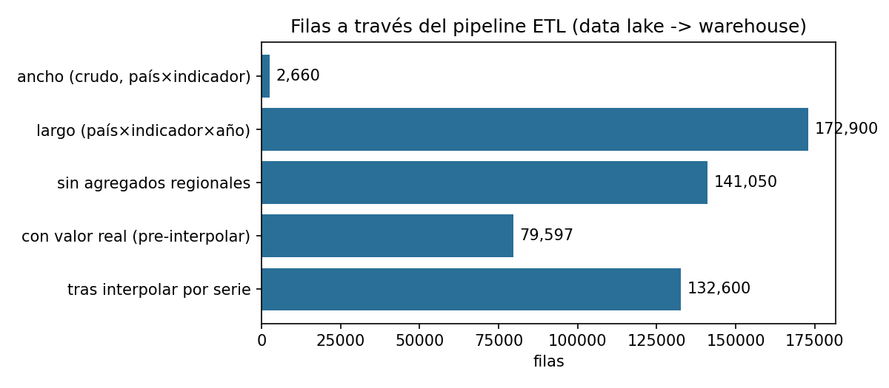
A horizontal bar per pipeline stage, each labeled with its real row count, read top to bottom: the wide raw extract (2,660 country×indicator rows, one per curated indicator) → melted to long format (172,900 country×indicator×year rows, one per real or missing observation) → after excluding regional/income aggregates via the Country sheet's Region field (141,050) → rows with a real, non-null value before any interpolation (79,597) → after within-series interpolation recovers recoverable gaps (132,600). The gap between any two consecutive bars is a real, countable effect of one specific cleaning step, not an estimate.Before/after bar pair per curated indicator, at the fact-table level (country×indicator×year cells) rather than per-column like the other domains' charts — the direct numeric counterpart of the 86% gap-recovery rate quoted in the text above, and a reminder that the remaining post-cleaning bar height (14%) is exactly the set of series with literally no real observation anywhere to interpolate from, not a residual bug.
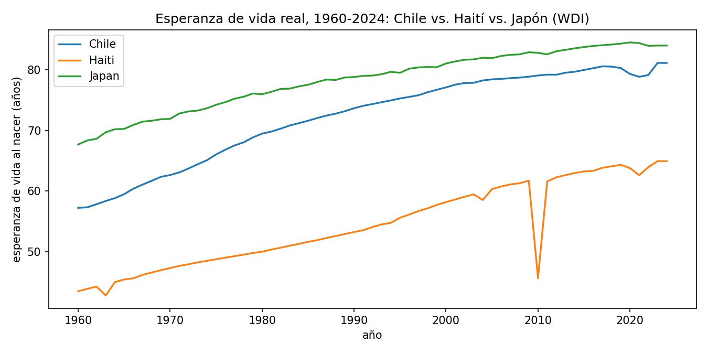
Three real national life-expectancy series pulled straight from the warehouse's fact table via SQL, 1960–2024: Chile (a steady real upward climb), Japan (starting already high and climbing further, among the world's highest), and Haiti (starting far lower and closing the gap much more slowly) — chosen specifically to make the real global inequality in this indicator visible in one chart, not to cherry-pick a flattering example.Correlation heatmap between the socioeconomic indicators (health spending, water/sanitation access, GDP per capita, infant mortality, Gini, etc.) and next year's life expectancy. Expect — and the chart shows — strong real correlation from infant mortality and basic-services access in particular, the same real drivers epidemiological literature would predict, which is what makes this domain's high R² a believable result rather than an overfit one.Train/validation loss vs. epoch for the life-expectancy MLP — note that both the features *and* the target were z-score scaled before training here (unlike the financial domain, where only the features were scaled), because the target's real scale (life-expectancy years, mean ~70) is far from a freshly-initialized network's near-zero output range; skipping that step is what originally produced wildly unrealistic predictions (details in model.py's docstring).Actual-vs-predicted scatter plus residuals for the domain's best model, Random Forest. The cloud sits tightly along the dashed diagonal across almost the entire real range of the axis (roughly 40 to 85 years), including the countries near the low end — the visual counterpart of a real R²=0.943, the strongest result of all four domains.Grouped bars per model per metric — the train-mean baseline's R² bar is drawn clearly negative (not clipped at zero), the sharpest such contrast of any domain in this project, because a 1960s-era global average is a particularly bad predictor for a 2019–2024 test period given how much the real global trend has moved since then.